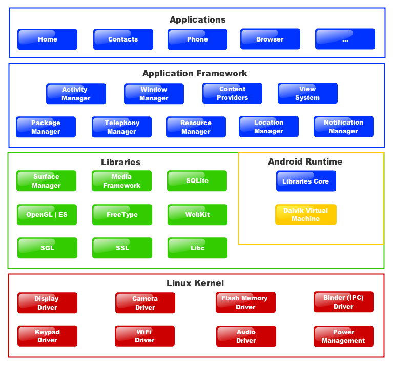

3. Android – Kiến trúc (Architecture)
Hệ điều hành Android là một ngăn xếp của các thành phần ứng dụng (stack of software components), có thể chia thành 5 phần và 4 lớp như trong sơ đồ kiến trúc Android dưới đây.

1. Nhân Linux (Linux kernel)
Nằm ở tầng dưới cùng là lớp Linux kernal – Linux 3.6 với khoảng 115 patches. Lớp này liên hệ với phần cứng và nó chứa tất cả driver phần cứng cần thiết như camera, bàn phím, màn hình…
2. Thư viện Android (Android libraries) và Android Runtime
- Phía trên tầng Linux kernel là tầng libraries, chứa những thư viện hỗ trợ. Một số có thể kể đến như là bộ máy trình duyệt web mã nguồn mở WebKit, thư viện libc, cơ sở dữ
liệu SQLite tiện lợi cho việc lưu trữ và chia sẻ dữ liệu, thư viện hỗ trợ thu phát âm thanh và video, thư viện SSL giúp bảo mật mạng…
- Tầng này chứa tất cả các thư viện Java, được viết đặc biệt cho Android như các thư viện framework, các thư
viện xây dựng giao diện, đồ họa và cơ sở dữ liệu. Dưới đây là một số thư viện quan trọng mà các lập trình viên nên biết:
+ android.app − Cung cấp quyền truy cập tới mô hình ứng dụng và là nền tảng của mọi ứng dụng Android applications.
+
android.content − Cho phép truy cập nội dung, phát hành và tin nhắn giữa các ứng dụng và các thành phần trong một ứng dung.
+ android.database − Được dùng để truy cập vào dữ liệu được đưa ra bởi bộ phận cung cấp nội dung, bao gồm các lớp quản
lý cơ sở dữ liệu SQLite.
+ android.opengl − Cho phép tương tác với thư viện đồ họa OpenGL ES 3D.
+ android.os − Giúp ứng dụng truy cập những dịch vụ cơ bản của hệ điều hành bao gồm tin nhắn, dịch vụ hệ thống và liên lạc nội bộ (inter-process communication).
+
android.text − Được dùng để vẽ và thao tác văn bản trên màn hình.
+ android.view − Các khối xây dựng cơ bản của giao diện người dùng.
+ android.widget − Một tập hợp rất nhiều thành phần giao diện được xây dựng sẵn như nút bấm (button), nhãn (label), danh sách hiển thị (list views), quản lý bố cục (layout
managers)…
+ android.webkit − Tập hợp các lớp (classes) cho phép trình duyệt web được nhúng vào ứng dụng.
- Trong tầng này còn có một phần không kém phần quan trọng là Android runtime, bây giờ chúng ta sẽ tìm hiểu các thư viện C/C++ trong tầng này.
- Android Runtime chứa Dalvik Virtual Machine (DVM) – một biến thể của Java Virtual Machine, đặc biêt thiết kế và tối ưu hóa cho Android. DVM giúp mỗi ứng dụng Android chạy trong chính tiến trình (process) của nó với một đại diện (instance) của DVM.
- Ngoài ra, Android Runtime cũng chứa tập hợp các thư viện quan trong cho phép người lập trình viết ứng dụng sử dụng ngôn ngữ lập trình Java.
3. Application Framework
- Application Framework cung cấp nhiều dịch vụ cấp cao dưới dạng các lớp viết bằng Java (Java classes) Lập trình viên được phép sử dụng các lớp này để tạo ra các ứng dụng.
- Android framework chứa các dịch
vụ quan trọng như:
- Activity Manager − Quản lý tất cả các phần của vòng đời (lifecycle) ứng dụng và các hoạt động ngăn xếp (activity stack).
- Content Providers − Cho phép ứng dụng phát hành và chia sẻ dữ liệu với ứng dụng khác.
-
Resource Manager − Cho phép truy cập tới những tài nguyên không phải là mã nguồn như chuỗi, cài đặt màu, bố cục giao diện.
- Notifications Manager − Giúp ứng dụng hiển thị thông báo và nhắc nhở người dùng.
- View System − Một tập hợp mở
rộng giúp tạo giao diện người dùng.
4. Ứng dụng (applications)
Ở tầng trên cùng là các ứng dụng Android đi kèm với hệ điều hành như Contacts Books, Browser, Games… Thiết nghĩ không cần nói nhiều thêm về tầng này.